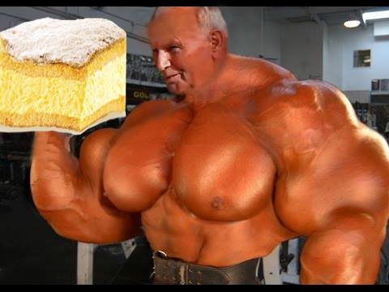

Pope's Cream recepie
Ingredients
Butter 300g
all purpose flour 300g
vinegar 1 spoon
1 Egg
Vanilla pudding 64g
sugar 5 spoons
Milk 750ml
powdered sugar 6 spoons
Margarine 250g
Vanilla sugar 16g
30% heavy cream 250g
Recipe
The papaya creamer in my recipe is entirely homemade - homemade puff pastry my way and homemade cream. Traditionally, creamers are served cold, but we start by preparing the puff pastry: weigh out 100 g of flour and 300 g of butter. Form them into a butter ball and set aside until you prepare the second part of the dough for the papal creamers.
Then: 200 flour, 1 egg, vinegar and warm (this is important!) water knead as for dumpling dough, then roll out. Put the prepared "butter ball" on the rolled out dough and gently spread it all over. Fold the dough thus prepared into an envelope and put it in the freezer for 15 minutes. After 15 minutes, take out the dough and roll it to one side to a thickness of no more than 1 cm, fold it again so that it becomes a square and put it in the freezer for 15 - 20 minutes. Repeat this activity 4 times. It requires patience and time, but I guarantee that this procedure will make the Pope's cream cakes downright delicious - crisp and melt-in-your-mouth on one
Divide the prepared dough for the Wadowice cream cake into two parts. Roll out the first part into a pancake about 0.5 cm thick - place on a large baking sheet and bake in a preheated oven at 210 degrees C for 15 - 25 minutes (until nicely browned). In the same way, bake the second part of the cake for a creamy.in the mouth, and in the other with a nice texture of connected pastry leaves
It's time for the filling, which is the cream for the creamer. It must be smooth, fluffy and fragrant - this will make the homemade papal creamers taste like in Wadowice! Boil two puddings in the amount of milk for one pudding with 3 - 4 tablespoons of sugar. Mix the cooled pudding with soft margarine or butter - this ingredient can be confidently substituted, if you want a strongly buttery flavor then it's worth making the creamer with butter only.
Whip the cream with vanilla sugar to a stiff paste. Finally, add about 3 tablespoons of powdered sugar and mix gently. Mix the pudding cream mixture with a spoon into the cream and spread it on the first part of the puff pastry. Cover the cream with the second part of the pastry and sprinkle with powdered sugar. You can put the finished puff pastry creamers in the refrigerator for 2 hours. This is also how they are served in numerous cafes and pastry shops. Take the Wadowice creamers out of the refrigerator about 20 minutes before serving, serve in portions, cut into squares.
